1.Introduction
This report measures what payment failure costs ZT East Africa, where that cost comes from, how much of it could realistically be recovered, and what management should do first. It uses the supplied dataset: 62,684 monthly records of 1,645,892 payment attempts by merchants in Kenya, Uganda, Tanzania, Ghana and Zambia, from January 2022 to April 2024, with daily exchange rates and a customer table.
The challenge brief asks for the issues to be highlighted. This report goes further in three ways. It separates exceptional account behaviour from the persistent problem, so that a few accounts do not set the agenda. It translates every currency carefully and shows how much of the trend is exchange rates rather than performance. And it values a realistic recovery against an observed benchmark rather than treating every failed fee as lost money.
Three measures recur throughout. They answer different questions, so all three are reported:
Count measures use every record. Dollar measures use the 62,463 records that have an exchange rate (Appendix A). Each finding carries a label showing how firmly the data supports it: Observed for figures read directly from the data, Calculated for results of a stated formula, Proxy for classifications standing in for something the data cannot show, and Hypothesis for possible explanations.
2.Scale: separating exceptional from persistent exposure
Fees recorded on failed transactions total $2.78M, 90.1% of all recorded fees. That headline mixes two very different things, and this section separates them before anything else is analysed.
Six in ten attempts fail by count (62.0%), and nine in ten fee dollars sit on failed transactions. The gap between the two rates is itself a finding, explained at the end of this section.
2.1 The exposure bridge
The headline is split into three mutually exclusive categories. Every failed fee falls into exactly one:
Extreme-volume anomalies are sudden account-level bursts, defined in Section 4. Escalation is the other activity of one account whose failures grew steadily rather than suddenly. Remaining exposure is everything else.
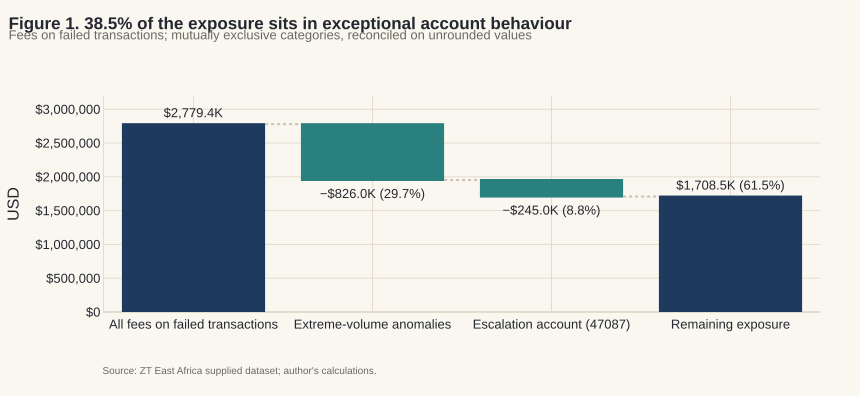
Figure 1 shows that 38.5% of the exposure, $1.07M, sits in exceptional account behaviour. Table 1 gives the detail behind the bars.
Table 1. Exposure bridge: fees on failed transactions by category
| Category | Definition | Failed attempts | Fees on failed transactions | Share |
|---|---|---|---|---|
| Extreme-volume anomalies | 20 customer-month-channel observations meeting the relative rule (Section 4), including account 47087's January 2024 mobile money observation ($25.3K) | 152,661 | $826.0K | 29.7% |
| Escalation | Account 47087's other observations | 108,065 | $245.0K | 8.8% |
| Remaining exposure | All other observations | 759,067 | $1,708.5K | 61.5% |
| Total | 1,019,793 | $2,779.4K | 100% |
Source: ZT East Africa supplied dataset; author's calculations.
The categories reconcile exactly on unrounded values ($825,960 + $244,996 + $1,708,468 = $2,779,424). The anomaly categories are proxies: they identify unusual behaviour, not its cause. Remaining exposure is not a single channel or customer group: card carries 82% of it ($1.40M), USD card alone 61%, and mobile money 14%. Observed; categories are proxies
2.2 The trend once anomalies are removed

Figure 2 compares all records with the remaining exposure, which excludes both the extreme-volume anomalies and the escalation account's other observations. The spikes at the end of the period belong to the anomaly categories. Without them, the count failure rate stays between 48% and 61% in every month, and the failed-fee share drifts down from about 89% in 2022 to about 79% in 2024. The remaining problem is chronic, but it is not getting worse. Observed
2.3 Three ways to measure the same failures
The three measures in Section 1 give different answers, as Table 2 shows.
Table 2. Three exposure perspectives, whole period
| Perspective | Measure | Whole period | Population |
|---|---|---|---|
| Operational | Count failure rate | 62.0% | All records |
| Financial | Failed-fee share | 90.1% | Translatable records |
| Commercial | Failed-value share | 88.3% | Translatable records, excluding value anomalies |
The dollar measures sit well above the count measure because failures skew to larger payments. The average failed attempt carried $68.55 of value against $14.78 for a successful one, 4.6× as much. Fees are charged at a similar rate on both: 3.70% of value on failed attempts and 3.30% on successful ones. Failed fees are high because failed payments are large, not because failures are priced differently. Observed
3.Where failure concentrates
This section asks where the remaining exposure sits: by payment type, market, customer, cell and payment size. The answer is consistent at every level. One channel holds most of the exposure, and it fails in every market.
3.1 By payment type and market
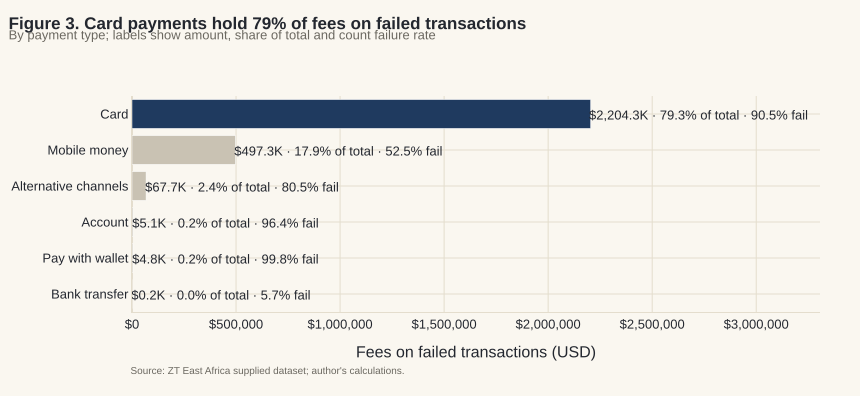
Figure 3 shows that card holds 79% of fees on failed transactions and mobile money 18%. Bank transfer is the one reliable channel, failing 5.7% of the time. It carries only 0.7% of attempts at $0.26 per failed attempt, however, so moving volume towards it is not a meaningful lever. Observed

Figure 4 crosses market with payment type. Card failure is high in every market (79–93%), while mobile money ranges from 43% in Uganda to 70% in Kenya, where account 47087 inflates the rate. Kenya card carries $1.07M across all records, of which $401K is extreme-volume anomalies. Among currencies, USD records fail 93.7% of the time and hold 67.0% of failed fees ($1,861.9K); GHS ($323.6K) and UGX ($211.8K) follow. The problem is a channel problem that shows up everywhere, not a market problem. Observed
3.2 By customer
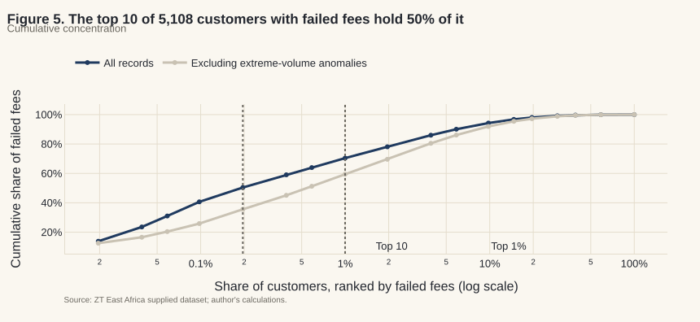
Exposure is also concentrated by customer. Of the 5,657 customers who transacted, 5,108 recorded fees on failed transactions, and Figure 5 ranks these 5,108. The top 10 hold 50.4% of failed fees, and the top 1% (51 customers) hold 70.4%. Excluding extreme-volume anomalies, the top 10 still hold 35.6%. Account-level review is therefore an efficient first step: a small list of merchants covers most of the money. Observed
3.3 What drives each cell: volume, failure rate or fee yield
A cell's failed fees can be written as the product of three drivers, so the same exposure can arise for different reasons:
Here is the cell's attempts, its failure rate and the fee per failed attempt. Table 3 applies this to the six largest cells, excluding extreme-volume anomalies.
Table 3. Drivers of failed fees by cell, excluding extreme-volume anomalies
| Cell | Share of attempts | Failure rate | Fee per failed attempt | Fees on failed transactions | Dominant driver |
|---|---|---|---|---|---|
| Kenya card | 9.3% | 88.5% | $5.42 | $664.5K | Reliability, at scale |
| Kenya mobile money | 25.3% | 68.6% | $1.12 | $289.6K | One account (47087) |
| Uganda card | 4.0% | 76.7% | $6.26 | $285.4K | Reliability |
| Tanzania card | 1.0% | 86.4% | $18.86 | $234.2K | Yield: 8× the average |
| Ghana card | 1.7% | 91.1% | $8.06 | $184.7K | Reliability |
| Uganda mobile money | 38.6% | 42.8% | $0.57 | $141.9K | Scale: low failure, most attempts |
| All cells | 100% | 58.1% | $2.25 | $1,953.5K | — |
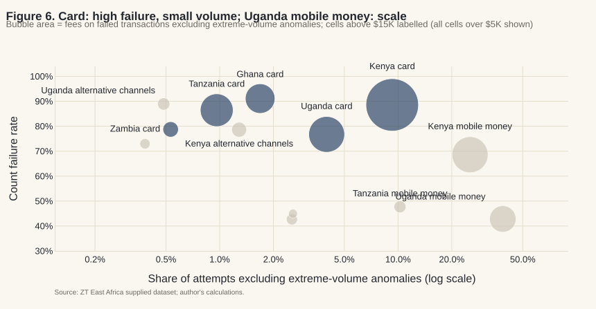
Figure 6 places each cell by its share of attempts and its failure rate. The card cells sit high: they need a reliability fix. Uganda mobile money sits low and far to the right. It fails less often than average and its exposure comes from volume, so it does not need the same fix. Tanzania card is a yield story: each failure carries about three and a half times the fee of a Kenyan card failure. Calculated
3.4 By payment size
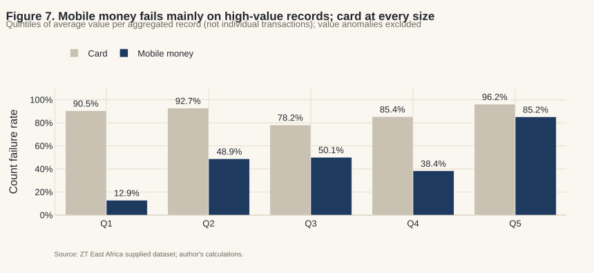
Figure 7 splits attempts into five size bands (quintiles of the average value per aggregated record). Card fails at 78–96% in every band. Mobile money fails 13–50% below the top band and 85% within it. Because a single account can drive a band, the result was rerun under four exclusions in Table 4.
Table 4. Top-quintile failure under alternative exclusions
| Version | Mobile money Q5 failure | Mobile money Q1–Q4 failure | Mobile money Q5 failed fees | Largest customer's share of Q5 failed fees | Card Q5 / Q1–Q4 failure |
|---|---|---|---|---|---|
| All translatable records | 85.2% | 42.6% | $434.4K | 57% | 96.2% / 86.4% |
| Excluding extreme-volume anomalies | 84.3% | 42.5% | $408.2K | 54% | 90.4% / 83.8% |
| Excluding account 47087 | 74.9% | 42.2% | $186.8K | 40% | 96.2% / 86.3% |
| Excluding value anomalies | 85.2% | 42.6% | $430.6K | 58% | 96.2% / 86.4% |
| All three exclusions | 74.8% | 42.0% | $182.0K | 41% | 90.4% / 83.7% |
The high-value gap survives every exclusion: 75% against 42% even with all three applied. More than half of the fee exposure behind it, however, is account 47087. High-value mobile money failure is a genuine pattern worth investigating, not yet a case for changing payment limits. Observed pattern; cause is a hypothesis
4.Failure diagnostics
The data has no failure codes, so this section classifies patterns rather than causes. It defines the anomaly categories used in Section 2, splits failures into "hard" and "mixed", and identifies which customers and cells fail persistently. Proxy throughout
4.1 Extreme-volume anomalies
A customer-month-payment type is flagged as an extreme-volume anomaly when all three conditions hold:
Here , and are failed, total and successful attempts for customer in month . Twenty observations from 15 customers qualify. Table 5 lists the largest.
Table 5. Largest extreme-volume anomaly observations
| Account | Market | Channel | Month | Failed attempts | Successes | Prior six-month median | Fees on failed transactions |
|---|---|---|---|---|---|---|---|
| 49957 | Kenya | Card | Jan 2024 | 31,157 | 0 | 1 | $248.8K |
| 51026 | Uganda | Card | Jan 2024 | 22,300 | 0 | 1.5 | $198.1K |
| 49477 | Uganda | Card | Jan 2024 | 19,834 | 0 | 0 | $181.7K |
| 49957 | Kenya | Card | Dec 2023 | 23,198 | 0 | 1 | $135.6K |
| 47087 | Kenya | Mobile money | Jan 2024 | 15,118 | 28 | 103 | $25.3K |
| Other 15 observations | — | — | 2022–2024 | 41,054 | — | — | $36.5K |
Four account-months, all card, carry most of the anomaly exposure, and none of them recorded a single success. The pattern is consistent with automated retries or card testing, but the data cannot confirm automation. The result is not sensitive to the thresholds: the anomalies' share of failed fees is 28.6% under strict rules (2,000 attempts, 100×, under 2% success), 29.7% under the agreed ones and 32.0% under loose ones (500, 25×, under 10%). Proxy
4.2 Sustained escalation
The relative rule has a blind spot: an account whose failures grow steadily raises its own baseline and is never flagged.
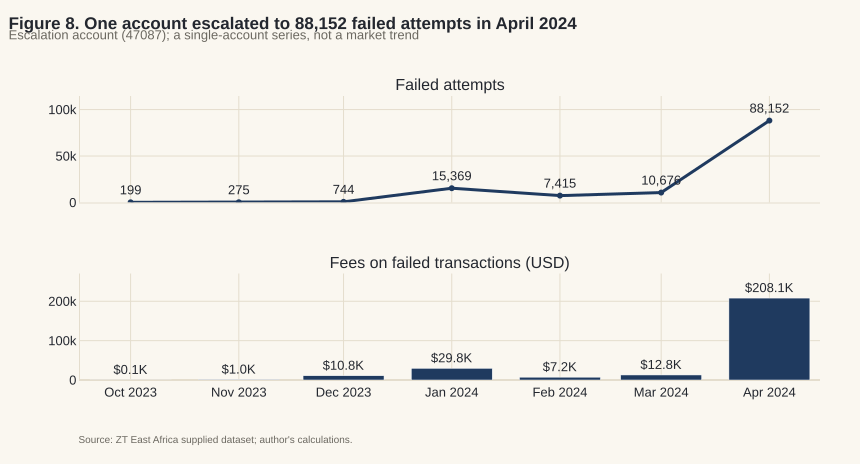
Figure 8 shows exactly this. Account 47087, a Kenyan merchant taking GHS mobile money, rose from 199 failed attempts in October 2023 to 15,369 in January 2024 and 88,152 in April, with no more than 90 successes in any month. Only its January observation crossed the relative rule. Its other activity forms the escalation category in Section 2 ($245.0K), and the monitoring framework in Section 8 adds an absolute trigger to catch this pattern. Observed
4.3 Hard and mixed failures
A customer-month-channel with failures but no successes is a "hard" failure; one with both is "mixed". Hard failures may be consistent with configuration or acceptance problems, while mixed failures may reflect retries, entry errors or other intermittent issues; the data cannot distinguish these explanations. Table 6 gives the split.
Table 6. Hard and mixed failures
| Classification | Customer-month-channels | Failed attempts | Share | Fees on failed transactions | Share |
|---|---|---|---|---|---|
| Extreme-volume anomaly | 20 | 152,661 | 15.0% | $826.0K | 29.7% |
| Hard: no successes that month | 18,073 | 102,350 | 10.0% | $563.2K | 20.3% |
| Mixed: successes and failures | 14,359 | 764,782 | 75.0% | $1,390.3K | 50.0% |
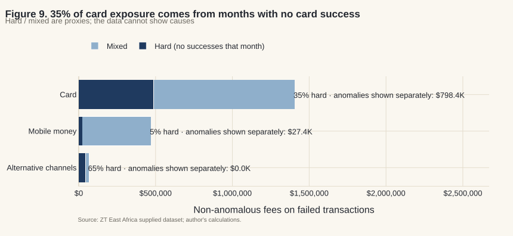
Figure 9 shows the split by channel. Hard failures make up 35% of card's non-anomalous failed fees, against 5% for mobile money. Customer-months with repeated failures and no successes warrant checking acceptance, configuration and currency routing, although the data cannot rule out customer-side causes. Proxy; causes are hypotheses
4.4 Persistent customers, tenure and lapse
Of 1,682 customers with at least six active months, 950 (56%) are persistent: their monthly failure rate is 75% or higher in at least half of their active months. They hold 43.6% of failed attempts but 66.0% of failed fees outside the anomalies, so they matter financially, not only in number. A further 3,131 customers had an elevated month without it recurring. Observed
Table 7 asks whether new customers fail more.
Table 7. Failure by customer tenure at the month of attempt
| Tenure | Count failure rate | Failed-fee share | Share of failed fees |
|---|---|---|---|
| 0–3 months | 61.6% | 87.5% | 20.5% |
| 4–12 months | 53.7% | 85.7% | 24.6% |
| 13–24 months | 52.8% | 85.1% | 20.6% |
| 25+ months | 62.7% | 87.2% | 34.3% |
Failure is U-shaped across tenure, but the failed-fee share is flat at 85–88%, so onboarding is not the main source of exposure. Failure is, however, associated with leaving. 4,328 of the 5,451 customers active before February 2024 (79%) made no attempts in February–April 2024. Before February, these lapsed customers had failed more than retained ones: 59.7% against 51.6% by count. Among customers with six or more active months, 59% of persistent customers lapsed against 51% of the rest. This is consistent with failure driving attrition, but it does not prove it. Observed association; causation is a hypothesis
4.5 Structural or episodic: control charts by cell
To tell a structural problem from a temporary spike, each market × payment type cell was tracked on a Laney p′ control chart. This is a standard chart adjusted for the extra month-to-month variation that large samples show. For month with attempts:
Ten cells have at least 12 months with 500 or more attempts; the excluded cells hold 2.9% of failed fees. Table 8 gives each cell's flags, which are not mutually exclusive.
Table 8. Pattern flags by cell
| Cell | Eligible months | Median monthly failure | First 6 → last 6 months | Flags | Months above the control limit (largest customer's share) |
|---|---|---|---|---|---|
| Kenya card | 28 | 92.8% | 91.3% → 90.5% | Structural, episodic | Dec 2023 (70%), Jan 2024 (58%) |
| Uganda card | 28 | 84.4% | 87.1% → 74.8% | Structural, episodic | Jan 2024 (50%) |
| Kenya mobile money | 28 | 59.8% | 53.6% → 66.6% | Deteriorating, episodic | Apr 2024 (90%) |
| Tanzania card | 12 | 86.8% | 87.5% → 86.4% | Structural | — |
| Ghana card | 20 | 93.1% | 84.8% → 96.2% | Structural, deteriorating, episodic | May 2023 (87%) |
| Uganda mobile money | 28 | 43.3% | 38.6% → 45.5% | Episodic | Oct 2022, Aug and Sep 2023 (35–41%) |
| Kenya alternative channels | 22 | 79.6% | 75.5% → 78.8% | Structural | — |
| Tanzania mobile money | 14 | 48.4% | 53.0% → 47.1% | Stable | — |
| Zambia mobile money | 15 | 41.5% | 40.2% → 45.2% | Stable | — |
| Ghana mobile money | 15 | 43.9% | 64.5% → 35.1% | Unstable | — |
Flags: structural = median failure of 70% or more; deteriorating = last six months at least 10 points above the first six; episodic = a month above the control limit; unstable = standard deviation of 15 points or more.
The adjustment matters: ranges from 2.5 to 17.6, so ordinary limits would be several times too narrow. The largest-customer share decides how each signal should be read. Kenya mobile money's April "deterioration" is 90% one account (47087), and Ghana card's May 2023 signal is 87% one account. Uganda mobile money's signals are weak and should be treated as monitoring prompts rather than evidence of a material deterioration. All these readings are limited by the short series of 28 monthly points, which allows no test of seasonality or of independence between months, and by the concentration of some months in single customers. The structural problems are the card cells, which fail at 84–93% in a typical month, spikes or not. Calculated
5.January 2024 investigation
January 2024 is the month the brief singles out. Fees on failed transactions rose from a $74.5K monthly average in July–December 2023 to $738.5K. This section explains the jump in full, in a fixed order: anomalies first, then exchange rates, then the underlying drivers.
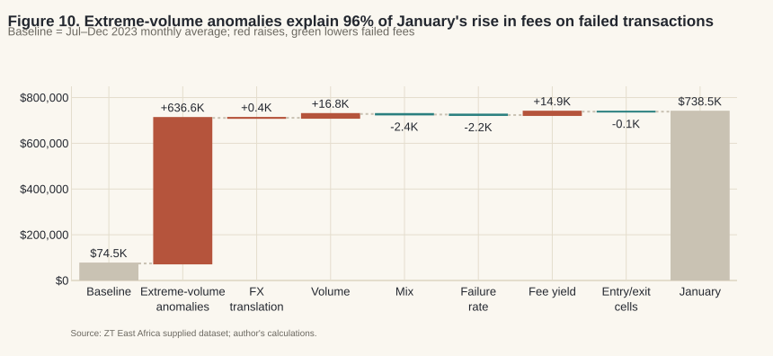
Figure 10 shows that extreme-volume anomalies account for $636.6K (96%) of the increase. January's anomaly fees were $661.9K, of which $628.6K sat in three card accounts, against a $25.4K baseline average. The remaining non-anomalous change was decomposed with the additive LMDI-I method:
The four terms are the volume, mix, failure-rate and fee-yield effects. is total attempts, the cell's share of attempts, its failure rate and its fee per failed attempt, at constant 2022 exchange rates. The method leaves no residual. Table 9 gives the complete bridge.
Table 9. January 2024 bridge against the July–December 2023 monthly average
| Component | Amount | Evidence |
|---|---|---|
| Baseline: Jul–Dec 2023 monthly average | $74,451 | Observed |
| Extreme-volume anomalies (January $661,931 less the $25,376 baseline) | +$636,556 | Proxy |
| FX translation effect | +$420 | Calculated |
| Volume effect | +$16,823 | Calculated (LMDI) |
| Mix effect | −$2,362 | Calculated (LMDI) |
| Failure-rate effect | −$2,207 | Calculated (LMDI) |
| Fee-yield effect | +$14,894 | Calculated (LMDI) |
| Entry/exit cells (6 of 24 cells) | −$51 | Calculated |
| January 2024 | $738,524 | Observed |
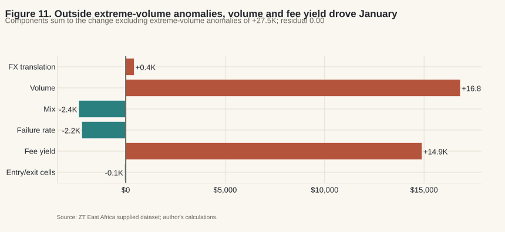
Figure 11 isolates the non-anomalous change of +$27,517. Three conclusions follow.
- Reliability did not worsen. The failure-rate effect is slightly favourable, led by Uganda card, which improved from 74.0% to 59.5% failing. Outside the extreme-volume anomalies, January's failed-fee share was 78.8% against an 80.7% baseline.
- Volume and yield explain the rest. More attempts added $16.8K. A higher fee per failed attempt added $14.9K, almost all from Tanzania card, where it rose from $4.13 to $37.43: a few large-ticket failures.
- Exchange rates hardly matter here. The translation effect is only +$420, because the gap between reported and 2022-rate fees was almost the same in the baseline months and in January.
January was an exceptional account-concentration event, not a broad deterioration. The three January card accounts did not repeat the burst: account 49957 recorded no activity after January, and the other two fell back to a handful of attempts. Account 47087 followed a different path, escalating through April 2024 (Section 4.2). Smaller extreme-volume observations also occur in February and April 2024, and in six months between January 2022 and July 2023. Account 49957 had already produced $135.6K in December, so a December alert would have caught it. The response January calls for is detection and containment, not a structural fix. Calculated
6.Foreign exchange analysis
35.8% of recorded fees are in local currencies, and several of them fell sharply against the US dollar during the period. This section measures how much of the reported trend is exchange rates rather than performance. Every local-currency fee is restated at its currency's 2022 average rate, record by record:
Here is a record's fee in local currency and the currency's 2022 average rate in US dollars per unit.
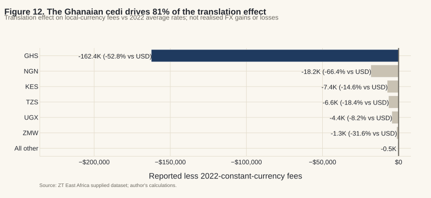
Figure 12 shows that depreciation cut reported local-currency fees by $201.0K (−15.4%) against 2022 rates, and that the Ghanaian cedi accounts for 81% of the effect. The effect grows with the cedi's slide: −$0.3K in 2022, −$36.4K in 2023 and −$164.3K in January–April 2024. Table 10 shows where it lands.
Table 10. Reported fees against 2022 constant currency
| Measure | Reported | At 2022 constant currency | Difference |
|---|---|---|---|
| Fees on failed transactions | $2,779.4K | $2,961.1K | −$181.6K (−6.1%) |
| Successful-transaction fees | $306.2K | $325.6K | −$19.3K (−5.9%) |
Both measures shrink by about 6% in dollar terms. The two effects mean different things, though. On failed fees, depreciation flatters the trend: part of the apparent fall is exchange rates, not better completion. On successful fees, depreciation erased $19.3K that was actually earned. Reporting only in US dollars would hide both. Calculated
6.1 Is a monthly average rate appropriate?
Fees are translated at the monthly average of daily rates. This is an approximation informed by IAS 21, which allows an average rate when rates do not fluctuate significantly. To test that condition, currency-months whose daily high–low range exceeds 10% of the average were flagged; the 10% threshold is an analytical choice, not an IAS 21 rule. Table 11 gives the result.
Table 11. Rate-volatility screen for the six main currencies
| Currency | Months above the 10% screen (of 28) | Average monthly range | Widest month |
|---|---|---|---|
| NGN | 10 | 10.9% | 60.0% |
| GHS | 7 | 9.5% | 54.9% |
| ZMW | 5 | 7.3% | 20.8% |
| KES | 3 | 2.7% | 11.9% |
| TZS | 1 | 2.3% | 11.8% |
| UGX | 0 | 2.5% | 6.7% |
As a sensitivity only, the flagged months were also translated at month-end rates. Fees in those months move from $41.0K to $39.6K (−3.5%), and all fees on failed transactions from $2,779.4K to $2,766.6K (−0.5%). The translation basis is not material to the totals. The volatile naira and cedi months should still be disclosed, and performance reported at constant currency alongside reported US dollars. Calculated
7.Recovery opportunity
Not every failed fee could be recovered, so this section values a realistic target rather than the whole $2.78M. It asks what USD card would earn if it failed no more often than mobile money does in the same market.
7.1 Why USD card, and why the mobile money benchmark
Outside the extreme-volume anomalies, USD card holds $1,044.5K of fees on failed transactions, 53.5% of the total, and it has a natural benchmark: mobile money in the same market. A benchmark is only useful if the comparison is fair. Different customers might simply use different channels, so Table 12 compares the two channels across all activity and then among the same customers.
Table 12. USD card against mobile money failure, all activity and the same customers
| Market | USD card, all | Mobile money, all | Gap (pp) | USD card, same customers | Mobile money, same customers | Gap (pp) | Customers using both |
|---|---|---|---|---|---|---|---|
| Kenya | 89.0% | 68.6% | 20.4 | 88.3% | 75.3% | 13.0 | 446 |
| Uganda | 77.6% | 42.8% | 34.8 | 76.6% | 34.0% | 42.6 | 514 |
| Tanzania | 85.9% | 47.7% | 38.2 | 84.3% | 58.3% | 26.0 | 84 |
| Ghana | 95.7% | 45.0% | 50.8 | 96.2% | 44.1% | 52.1 | 213 |
| Zambia | 84.8% | 42.7% | 42.1 | 87.2% | 45.5% | 41.8 | 75 |
| All five | 87.6% | 51.7% | 35.9 | 87.0% | 57.7% | 29.3 | 1,332 |
Among the 1,332 customers who use both channels, the gap is 29.3 points, against 35.9 across all activity. Account 47087 distorts both comparisons. It is a Kenyan merchant with more than 100,000 non-anomalous mobile money attempts and a few dozen USD card attempts, so it sits inside Kenya's mobile money benchmark and among the customers using both channels. Without it, Kenya's mobile money failure rate falls from 68.6% to 56.3%, and the five-market gap is 40.6 points across all activity and 41.1 points among the 1,331 customers using both. Kenya's narrow same-customer gap (13.0 points) is therefore mostly this one account; without it, the gap is 29.8 points. This comparison is descriptive: it does not separate channel effects from customer choice, nor show that mobile money's performance can be achieved on card. Observed
7.2 The calculation
For each market :
Here is all non-anomalous USD card attempts (not only failed ones, since a lower failure rate applies to every attempt), the current failure rate, the target and the observed fee per successful USD card payment. Valuing additional successes at that observed average assumes the historical average fee applies to the extra payments as well. The assumption matters most in Tanzania, where the average is $20.79, against $4.63 in Uganda. Table 13 applies the base case, which sets the target at mobile money's rate.
Table 13. Base-case recovery by market
| Market | Attempts (A) | Failed attempts | Current failure | Target (mobile money) | Reduction (pp) | Additional successes | Fee per success | Incremental fees |
|---|---|---|---|---|---|---|---|---|
| Kenya | 79,582 | 70,804 | 89.0% | 68.6% | 20.4 | 16,223 | $7.21 | $116.9K |
| Tanzania | 10,215 | 8,776 | 85.9% | 47.7% | 38.2 | 3,904 | $20.79 | $81.2K |
| Uganda | 18,499 | 14,364 | 77.6% | 42.8% | 34.8 | 6,444 | $4.63 | $29.8K |
| Ghana | 12,243 | 11,721 | 95.7% | 45.0% | 50.8 | 6,218 | $3.37 | $21.0K |
| Zambia | 2,060 | 1,746 | 84.8% | 42.7% | 42.1 | 867 | $5.54 | $4.8K |
| Total | 122,599 | 107,411 | 87.6% | 33,655 | $7.54 | $253.7K |
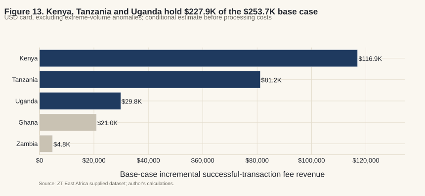
Figure 13 shows where the base case sits: Kenya, Tanzania and Uganda hold $228K of it. Tanzania ranks second despite having fewer attempts than Uganda, because each successful Tanzanian card payment earns $20.79 in fees.
7.3 Scenarios and sensitivities
The target is a judgement, so Table 14 brackets it with a conservative case (each market's own best three-month card rate) and an optimistic case (ten points below mobile money).
Table 14. Recovery scenarios
| Scenario | Target failure rate | Additional successes | Incremental fees, 28 months | Annual run-rate | Share of recorded fees | Share of addressable failed fees |
|---|---|---|---|---|---|---|
| Conservative | Card's own best 3-month rate | 9,373 | $80.6K | $34.5K | 2.6% | 7.7% |
| Base | Mobile money's rate, same market | 33,655 | $253.7K | $108.7K | 8.2% | 24.3% |
| Optimistic | 10 points below mobile money | 45,915 | $346.1K | $148.3K | 11.2% | 33.1% |
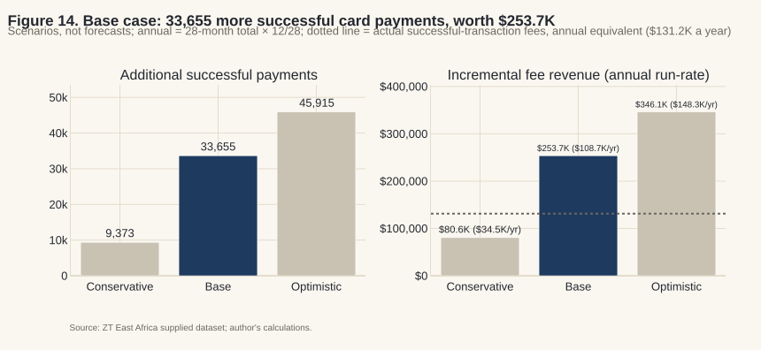
Figure 14 sets the annual run-rates against the annual equivalent of fees actually earned on successful payments: $131.2K a year, from $306K over 28 months. The base case would add 83% to that figure. Table 15 tests the base case against other benchmark definitions.
Table 15. Base case under alternative benchmarks
| Benchmark | Treatment | Base-case incremental fees, 28 months |
|---|---|---|
| Base | Mobile money failure rate in each market, as observed | $253.7K |
| Mobile money without account 47087 | Escalation account removed from the benchmark (Kenya 68.6% → 56.3%) | $324.1K |
| Same customers | Mobile money failure among the 1,332 customers using both channels | $200.4K |
| Same customers without account 47087 | As above, 1,331 customers | $296.3K |
| Same-month failure offset | Failed attempts reduced by successes in the same customer-month-channel: 13,628 attempts (12.7%) removed | $211.7K |
The base case is kept as the central estimate, but the benchmark matters: leaving account 47087 out of it raises the estimate by 28%, almost all in Kenya ($187.4K against $116.9K). The offset test lowers it, without showing that the removed failures were retries. The estimate is robust in direction, and on the observed benchmark it is, if anything, conservative. Calculated
7.4 Fee revenue is not profit
The dataset has no cost information, so every figure above is fee revenue before processing costs. Break-even is reached when the cost of each additional successful payment equals its fee: $7.54 on average, from $3.37 in Ghana to $20.79 in Tanzania. Table 16 shows how much base-case fee revenue would remain at illustrative processing-cost ratios, which are scenarios, not observed costs.
Table 16. Illustrative fee revenue remaining after assumed processing costs
| Processing cost as a share of incremental fees | 0% | 20% | 40% | 60% | 100% |
|---|---|---|---|---|---|
| Base-case fee revenue remaining, 28 months | $253.7K | $203.0K | $152.2K | $101.5K | $0 |
Even at an assumed 60% processing cost, $101.5K of base-case fee revenue would remain over the period. Other incremental operating costs are not included. The opportunity is worth pursuing, provided each market's improvement is costed before spending.
8.Management recommendations
The two problems need different responses. The account-level anomalies are a monitoring problem: contain them. Card completion in Kenya, Tanzania and Uganda is the improvement opportunity. Ranking cells by failure rate alone would point to the wrong places. Uganda alternative channels, for example, fails 89% of the time but holds only $19K.
8.1 Failure-to-Revenue Prioritisation Matrix
The matrix sets transparent criteria side by side rather than combining them into a weighted score, because no weighting could be justified from the data. It shows two improvement potentials:
- Internal potential: what a cell would recover by reaching its own best three-month failure rate. This is improvement the cell has already achieved once.
- Cross-channel potential: for card cells, what the cell would recover at mobile money's rate in the same market, in every currency. This is why Kenya's figure ($124.6K) exceeds the USD-only $116.9K in Section 7.
It also separates data confidence, which reflects how complete the cell's data is, from diagnostic confidence, which reflects how strongly the pattern supports the explanation. Diagnostic confidence is low when one customer holds most of a cell's failed fees.
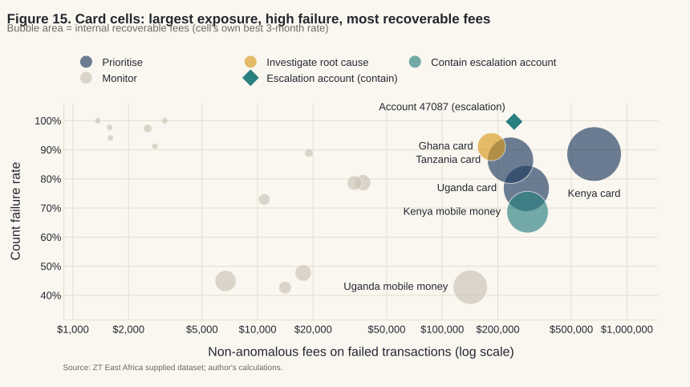
Figure 15 plots each cell by exposure and failure rate, with bubble size showing internal potential. The three card cells in the upper right are the priorities. Table 17 gives the full criteria for the cells that matter.
Table 17. Failure-to-Revenue Prioritisation Matrix
| Cell | Failure rate | Fees on failed transactions | Failed value | Internal potential | Cross-channel potential | Persistence | Data confidence | Diagnostic confidence | Action |
|---|---|---|---|---|---|---|---|---|---|
| Kenya card | 88.5% | $664.5K | $16.0M | $33.4K | $124.6K | Structural, episodic | High | High | Prioritise |
| Uganda card | 76.7% | $285.4K | $6.3M | $22.6K | $49.2K | Structural, episodic | High | High | Prioritise |
| Tanzania card | 86.4% | $234.2K | $5.5M | $22.9K | $88.2K | Structural | Medium | Medium | Prioritise |
| Kenya mobile money | 68.6% | $289.6K | $7.6M | $17.9K | — | Deteriorating, episodic | High | Low: 79% one account | Contain account 47087 |
| Ghana card | 91.1% | $184.7K | $3.7M | $6.8K | $42.9K | Structural, deteriorating | High | High | Investigate root cause |
| Uganda mobile money | 42.8% | $141.9K | $5.2M | $11.3K | — | Episodic (weak signals) | High | Low: 53% one customer | Monitor |
| Zambia card | 78.7% | $37.2K | $0.7M | $1.4K | $7.6K | Too little data | Low | Medium | Monitor |
Ghana card shows why both potentials matter. It has never had a good quarter, so its internal potential is small ($6.8K), yet its gap to mobile money is large ($42.9K). That combination calls for diagnosing acceptance or routing before committing spend.
8.2 Actions, owners and measures
Table 18 turns the matrix into five actions, each with a measure and a baseline to track it against. Owners are to be assigned by the team.
Table 18. Actions, measures and baselines
| Priority | Intervention | Measure | Baseline |
|---|---|---|---|
| 1. Anomaly containment | Account alerts on sudden spikes and sustained escalation; throttle and review | Extreme failed-attempt observations a month | 20 observations and $1.07M over 28 months |
| 2. USD card completion | Investigate merchant-months with zero card successes, then routing, acceptance and currency set-up in Kenya, Tanzania and Uganda | USD card count failure rate by market | Kenya 89.0%, Tanzania 85.9%, Uganda 77.6% |
| 3. Persistent customers | Review the 950 accounts with recurring elevated failure | Persistent-customer failed fees | $1.29M (66.0% of non-anomalous failed fees) |
| 4. High-value mobile money | Investigate the top-quintile result; do not change limits yet | Top-quintile mobile money failure rate | 85.2% (74.8% after exclusions) |
| 5. Financial monitoring | Report the three core measures monthly, with successful fees at constant currency | Monthly financial performance | 54.8% count failure, 84.8% failed-fee share (excluding anomalies) |
Each intervention should be measured against its own baseline. For Kenya card, for example: track the current failure rate against 89.0%, convert the improvement into additional successful payments (attempts × the fall in the failure rate), value them at $7.21 each, and check on the cell's control chart that the gain persists.
8.3 Monitoring triggers
Table 19 sets out the triggers that would turn this analysis into a standing monitoring framework.
Table 19. Monitoring triggers
| Indicator | Definition | Trigger |
|---|---|---|
| Account anomaly alert, relative | Failed attempts ≥ 1,000, more than 50× the 6-month median, success under 5% | Same month: throttle, then review |
| Account anomaly alert, absolute | Failed attempts ≥ 5,000 in a month with success under 5%, or failed attempts doubling 3 months running | Same month; would have caught account 47087 in January 2024 |
| Card cell control chart | Laney p′ chart for each market's card cell | A month above the limit, unless one customer holds more than half of it |
| Core failure measures | Count failure rate, failed-fee share, successful-transaction fees | Monthly, side by side |
| Constant-currency revenue | Successful-transaction fees at 2022 rates | Monthly, alongside reported US dollars |
| Rate-data checks | Daily high–low range above 10%; any day more than 5× the monthly median; any scale break | Disclose; investigate breaks such as the SLL redenomination |
8.4 Conclusion
The $2.78M headline overstates the structural problem and understates how concentrated the risk is. About 38.5% of it comes from 15 accounts that need detecting and containing. The remaining $1.71M is steady and spans every channel; card carries 82% of it, and USD card completion is the clearest improvement opportunity. Closing part of the gap to mobile money in Kenya, Tanzania and Uganda is the clearest route to more earned revenue. Reporting at constant currency would show whether that revenue is really growing.
Appendix A.Data and methodology
This appendix documents how the data was prepared. The brief's figures reproduce exactly from the data as supplied. One error in the supplied exchange rates is corrected, and every other apparent discrepancy is a difference of measure, not an error.
A.1 Two analytical populations
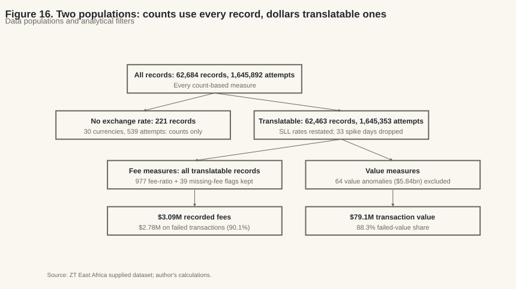
Figure 16 shows how the records flow into the two populations used throughout, and Table 20 gives the counts.
Table 20. Analytical populations
| Population | Records | Attempts | Used for |
|---|---|---|---|
| All records | 62,684 | 1,645,892 | Every count measure: failure rates, attempts, persistence, control charts |
| Translatable records | 62,463 | 1,645,353 | Every dollar measure: fees, values, yields, recovery |
The 221 records outside the second population are in 30 currencies with no exchange rate in the supplied data, and hold 539 attempts.
A.2 Reconciliation with the challenge brief
Table 21 sets the brief's figures beside the recalculated ones.
Table 21. Reconciliation with the challenge brief
| Measure | Brief | Recalculated | Population | Status |
|---|---|---|---|---|
| Transaction attempts | 1.65M | 1,645,892 | All records | Reconciles |
| Failed attempts | 1.02M (62%) | 1,019,793 (62.0%) | All records | Reconciles |
| Recorded fee revenue | $3.15M | $3,085,640 ($3,148,908 before the SLL correction) | Translatable | Brief includes the SLL error |
| Fees on failed transactions | $2.85M (90%) | $2,779,424 (90.1%); $2,842,692 before the correction | Translatable | Brief includes the SLL error |
| January 2024 "failure rate" | 97% | 79.8% by count; 97.3% failed-fee share | Both | Brief reports the failed-fee share |
| Months below 78% | None | Failed-fee share: 2 (Oct 2023 77.9%, Nov 2023 77.6%); none before the correction | Translatable | Holds only before the correction |
| January 2024 failed fees | Over $745K | $738,524 ($744,744 before the correction) | Translatable | Overstated |
| Card / mobile money / bank transfer failed-fee share | 94% / 77% / 3% | 93.7% / 77.3% / 3.3% | Translatable | Reconciles |
| Bank transfer share of volume | 2% | 0.7% of attempts; 1.6% of records | All records | Brief counts records |
| Kenya failed-fee share | 93% | 93.1% | Translatable | Reconciles |
Most differences come from the SLL correction or from the brief using a different measure. Fees on failed transactions are not treated as earned revenue anywhere in this report, because their recognition and collection cannot be established from the data.
A.3 Data-quality flags
Data problems were flagged independently, so that one kind of problem never excludes data affected by another. Table 22 lists the three flags.
Table 22. Independent data-quality flags
| Flag | Rule | Records | Treatment |
|---|---|---|---|
| Fee-ratio anomaly | Fee below 0.5% or above 20% of transaction value | 977, including 266 where the fee exceeds the value | Kept in fee measures; reviewed |
| Missing fee | No fee recorded | 39 | Zero in fee sums; kept in counts |
| Transaction-value anomaly | Value above $10,000 per attempt (about the 99.9th percentile), or zero or negative | 64, holding $5.84bn of $5.92bn reported value | Excluded from value measures only |
The largest value anomaly is a failed NGN record of 2.36 trillion across 24 attempts with a fee of NGN 314: the fee is plausible, the value is not. By contrast, the recurring UGX 500 million records of customer 1039721 are valid monthly aggregates of 3,000–4,300 attempts at a consistent 3.0% fee, and are kept.
A.4 Exchange-rate corrections
- Sierra Leone redenomination. On 1 July 2022 Sierra Leone moved to the new leone at 1 SLE = 1,000 SLL. The supplied SLL rate series switches to the new scale from that date, while the transactions stay at old-leone amounts. Translating them at the new rate overstates their fees 1,000-fold. Post-switch SLL rates are divided by 1,000, which removes $63.3K from fees on failed transactions.
- Rate spikes. 33 single-day rates more than five times away from their monthly median (MOP, MXN, THB, VEF), and two zero-rate TZS days, were dropped before averaging.
- Legacy codes. GHC and ZMK amounts were checked against GHS and ZMW medians and are at new-unit scale, so they are mapped to GHS and ZMW. XAF/CFA and CFA are mapped to XAF.
A.5 Translation and preparation rules
- Rate convention: US dollars per unit of currency, so a dollar amount is the local amount multiplied by the rate.
- Reported basis: the monthly average of daily rates (Section 6). Month-end rates are a sensitivity only, because closing rates relate mainly to monetary balances at reporting dates.
- Constant currency: each currency's 2022 average rate, applied record by record, so that a shift in currency mix is not mistaken for a rate effect.
- Failure: any status other than successful; the data has only two statuses.
- Country: taken from the merchant's customer record, not from the currency.
- Customer table: for 1,746 of 5,108 transacting customers (31%), the table's last transaction date precedes their last observed transaction, so lapse is measured from the transactions.
- Unit of analysis: customer × month × payment type. The data cannot show transaction sequence or time of month.
Appendix B.Sensitivity, validation and limitations
This appendix tests whether the headline depends on the choices made in Appendix A, and states what the data cannot show.
B.1 Headline sensitivity
Table 23 recomputes the three headline measures under each alternative treatment. The report basis keeps the 64 value-anomaly records in every fee measure and excludes them only from value measures; the third row shows the alternative of excluding them, and untranslatable records, from fees as well.
Table 23. Headline measures under alternative treatments
| Treatment | Fees on failed transactions | Failed-fee share | Count failure rate |
|---|---|---|---|
| Report basis (SLL corrected, monthly-average rates) | $2,779.4K | 90.1% | 62.0% |
| Before the SLL correction (as in the brief) | $2,842.7K | 90.3% | 62.0% |
| Alternative: value-anomaly and untranslatable records also excluded from fees | $2,581.9K | 89.4% | 61.9% |
| Month-end rates in volatile months | $2,766.6K | 90.1% | 62.0% |
| 2022 constant currency | $2,961.1K | 90.1% | 62.0% |
| Excluding extreme-volume anomalies | $1,953.5K | 86.5% | 58.1% |
| Also excluding account 47087 | $1,708.5K | 84.8% | 54.8% |
The failed-fee share holds at 89–90% under every data and translation choice. Only removing the anomaly categories moves it, and then to 85%. The headline is robust; what changes the story is separating the anomalies, which is why the report is built around that split.
B.2 Limitations
- No failure codes, provider identifiers or logs. "Extreme-volume anomaly", "escalation", "hard" and "mixed" are proxies; causes are hypotheses.
- Monthly aggregation. There is no transaction sequence, time of month or individual ticket size. Size quintiles describe aggregated records.
- No settlement, collection or cost data. Cash collected, realised exchange differences and contribution cannot be measured. Recovery is fee revenue before costs.
- Benchmark transferability. The same-customer comparison is descriptive; it does not show that mobile money's performance can be achieved on card.
- Short series. The control charts rest on 28 monthly points, with no test of seasonality or of independence between months. Tanzania card has only 12 eligible months and Zambia card 9, below the 12 needed, so Zambia card is not pattern-classified; the excluded cells hold 2.9% of failed fees.
- Rate data. Other undetected rate errors would move dollar measures, though not count measures.
B.3 Reproducibility
Every number, table and figure in this report comes from one pipeline run over the supplied workbook. The rules sit in a single assumptions file. The dashboard draws the same figures from the same code and recomputes them for any selection, and an Excel workbook rebuilds the main calculations in live formulas. The source code, data and outputs are listed on the cover.